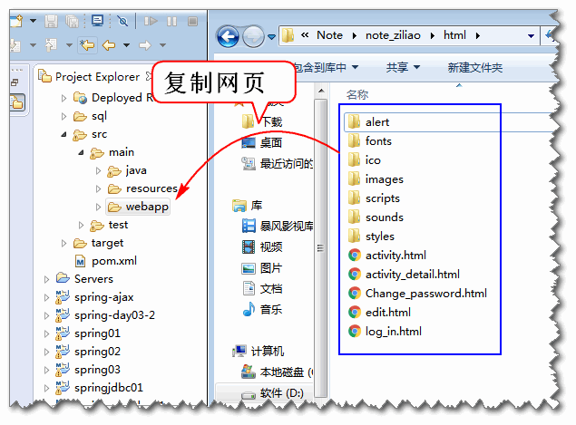

创建业务层接口
public interface UserService {
/**
* 登录功能, 登录成功返回用户信息, 登录失败
* 则抛出异常.
* @param name 用户名
* @param password 密码
* @return 如果登录成功就返回登录用户信息
* @throws UserNotFoundException 用户不存在
* @throws PasswordException 密码错误
*/
User login(String name, String password)
throws UserNotFoundException,
PasswordException;
}
创建业务异常类
public class UserNotFoundException extends RuntimeException {
private static final long serialVersionUID = 4180191103842028379L;
public UserNotFoundException() {
}
public UserNotFoundException(String message) {
super(message);
}
public UserNotFoundException(Throwable cause) {
super(cause);
}
public UserNotFoundException(String message, Throwable cause) {
super(message, cause);
}
public UserNotFoundException(String message, Throwable cause, boolean enableSuppression,
boolean writableStackTrace) {
super(message, cause, enableSuppression, writableStackTrace);
}
}
public class PasswordException extends RuntimeException {
private static final long serialVersionUID = 7097581917306952312L;
public PasswordException() {
}
public PasswordException(String message) {
super(message);
}
public PasswordException(Throwable cause) {
super(cause);
}
public PasswordException(String message, Throwable cause) {
super(message, cause);
}
public PasswordException(String message, Throwable cause, boolean enableSuppression, boolean writableStackTrace) {
super(message, cause, enableSuppression, writableStackTrace);
}
}
实现业务层方法
@Service("userService")
public class UserServiceImpl
implements UserService {
@Resource
private UserDao userDao;
public User login(String name, String password)
throws UserNotFoundException,
PasswordException {
if(password==null ||
password.trim().isEmpty()){
throw new PasswordException("密码空");
}
if(name==null || name.trim().isEmpty()){
throw new UserNotFoundException("用户名空");
}
User user = userDao.findUserByName(
name.trim());
if(user==null){
throw new UserNotFoundException("name错误");
}
if(password.trim().equals(user.getPassword())){
return user;
}
throw new PasswordException("密码错误");
}
}
配置Spring, 扫描业务层组件的注解 conf/spring-service.xml:
<context:component-scan base-package="cn.tedu.note.service"/>
测试
定义测试基类, 封装Spring容器初始化功能:
public abstract class BaseTest {
protected ClassPathXmlApplicationContext ctx;
@Before
public void initCtx() {
ctx = new ClassPathXmlApplicationContext(
"conf/spring-mvc.xml",
"conf/spring-mybatis.xml",
"conf/spring-service.xml");
}
@After
public void close() {
ctx.close();
}
}
测试登录方法
public class UserServiceTest {
@Test
public void testLogin(){
String name = "demo";
String password = "123456";
UserService service =
ctx.getBean("userService",
UserService.class);
User user = service.login(
name, password);
System.out.println(user);
}
}
为了测试, 需要更像数据库, 更新数据库的SQL
use cloud_note;
update cn_user
set cn_user_password='123456'
where cn_user_name='demo';
select cn_user_password
from cn_user
where cn_user_name='demo';
利用消息摘要技术加密用户密码, 避免保存密码明文, 可以有效的提供系统的安全性. 其原理如下:
加密算法测试:
public class Md5Test {
@Test
public void testMd5(){
String str = "123456";
String md5 = DigestUtils.md5Hex(str);
System.out.println(md5);
//e10adc3949ba59abbe56e057f20f883e
//加盐摘要
String salt = "今天你吃了吗?";
md5 = DigestUtils.md5Hex(salt+str);
System.out.println(md5);
//8bbf37d0962bf915a780f410ec1a4741
// update cn_user
// set cn_user_password='8bbf37d0962bf915a780f410ec1a4741'
// where cn_user_name='demo';
}
}
实现密码加密验证功能:
导入消息摘要工具类:
<dependency>
<groupId>commons-codec</groupId>
<artifactId>commons-codec</artifactId>
<version>1.10</version>
</dependency>
重构登录逻辑 验证摘要密码: UserServiceImpl
public User login(String name, String password)
throws UserNotFoundException,
PasswordException {
if(password==null ||
password.trim().isEmpty()){
throw new PasswordException("密码空");
}
if(name==null || name.trim().isEmpty()){
throw new UserNotFoundException("用户名空");
}
User user = userDao.findUserByName(
name.trim());
if(user==null){
throw new UserNotFoundException("name错误");
}
String salt="今天你吃了吗?";
String pwd = DigestUtils.md5Hex(
salt+password.trim());
if(pwd.equals(user.getPassword())){
return user;
}
throw new PasswordException("密码错误");
}
更新数据库, 将测试用户的密码更新为加密的 123456
update cn_user
set cn_user_password='8bbf37d0962bf915a780f410ec1a4741'
where cn_user_name='demo';
测试:
@Test
public void testLogin(){
String name = "demo";
String password = "123456";
UserService service =
ctx.getBean("userService",
UserService.class);
User user = service.login(
name, password);
System.out.println(user);
}
编写 JsonResult 封装JSON返回值:
public class JsonResult implements Serializable{
public static final int SUCCESS = 0;
public static final int ERROR = 1;
private int state;
/** 错误消息 */
private String message;
/** 返回正确时候的数据 */
private Object data;
public JsonResult() {
}
public JsonResult(Object data){
state = SUCCESS;
this.data = data;
}
public JsonResult(Throwable e) {
state = ERROR;
message = e.getMessage();
}
public int getState() {
return state;
}
public void setState(int state) {
this.state = state;
}
public String getMessage() {
return message;
}
public void setMessage(String message) {
this.message = message;
}
public Object getData() {
return data;
}
public void setData(Object data) {
this.data = data;
}
@Override
public String toString() {
return "JsonResult [state=" + state + ", message=" + message + ", data=" + data + "]";
}
}
实现控制器: UserController
@Controller
@RequestMapping("/user")
public class UserController {
@Resource
private UserService userService;
@RequestMapping("/login.do")
@ResponseBody
public Object login(
String name, String password){
User user = userService.login(
name, password);
return new JsonResult(user);
}
/**
* 在其他控制器方法执行出现异常时候, 执行
* 异常处理方法 handleException
*/
@ExceptionHandler(Exception.class)
@ResponseBody
public Object handleException(
Exception e){
e.printStackTrace();
return new JsonResult(e);
}
}
其中 @ExceptionHandler 注解用于异常处理
测试:
http://localhost:8080/note/user/login.do?name=demo&password=123456
http://localhost:8080/note/user/login.do
http://localhost:8080/note/user/login.do?name=demo&password=123
全面测试正常和异常情况.
将html页面复制到 webapp 文件夹:

更新log_in.html 添加脚本:
<meta charset="utf-8">
<link rel="stylesheet" href="styles/login.css"/>
<script type="text/javascript"
src="scripts/jquery.min.js"></script>
<script type="text/javascript"
src="scripts/login.js"></script>
添加scripts/login.js文件
在login.js文件添加事绑定脚本:
$(function(){
//console.log('Hello World!');
$('#login').click(loginAction);
$('#count').blur(checkName);
$('#password').blur(checkPassword);
});
添加用户名和密码检查方法:
function checkName(){
var name = $('#count').val();
var rule = /^\w{4,10}$/;
if(! rule.test(name)){
$('#count').next().html('4~10个字符');
return false;
}
$('#count').next().empty();
return true;
}
function checkPassword(){
var password = $('#password').val();
var rule = /^\w{4,10}$/;
if(! rule.test(password)){
$('#password').next().html('4~10个字符');
return false;
}
$('#password').next().empty();
return true;
}
添加登录按钮事件处理方法:
function loginAction(){
//console.log("loginAction");
//获取用户输入的用户名和密码
var name = $('#count').val();
var password = $('#password').val();
//检查 用户名和密码输入框
var n=checkName()+checkPassword();
if(n!=2){
return;
}
//data 对象中的属性名要与服务器控制器的参数
// 名一致! login(name, password)
var data = {"name":name,
"password":password};
$.ajax({
url:'user/login.do',
data:data,
type:'post',
dataType:'json',
success: function(result){
console.log(result);
if(result.state==0){
//登录成功!
var user = result.data;
console.log(user);
//跳转到 edit.html
location.href='edit.html';
}else{
var msg = result.message;
$('#count').next().html(msg);
}
},
error: function(e){
alert("通信失败!");
}
});
}
测试, Good Luck!